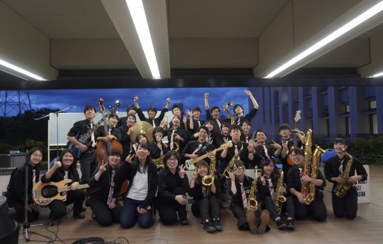
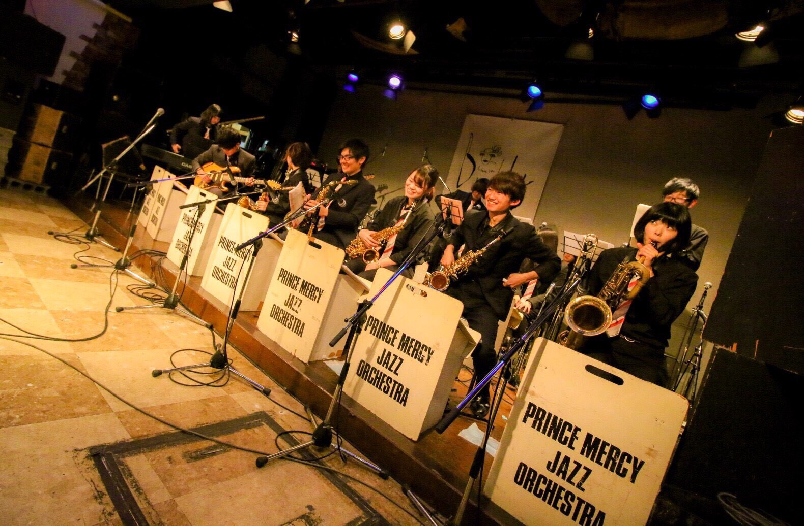

プリマとは？
-プリマについて-
- 私たちプリンスマーシージャズオーケストラ(通称プリマ)は、創価大学に在籍する学生で構成された学生団体です。
- プリマは、創価大学開学当初から活動している、非常に歴史が深い部活動であり、創価大学で唯一ジャズを演奏する音楽団体です。
- 学内外での演奏会や様々な依頼演奏、ステラジャムコンテストなどを主な活動としています。

-ジャズについて-
- ジャズはアメリカのニューオリンズに発生した民族音楽で、アフタービートによる独特の力強いリズムとスイングが持ち味です。
- 大人数編成で演奏するビッグバンド形式と、少人数編成で演奏するコンボ形式があり、主に使用する楽器にはトランペット、トロンボーン、サックス、ピアノ、ベース、ギター、ドラムがあります。

トップに戻る